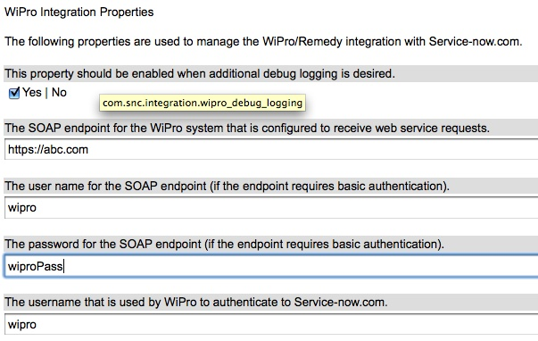

Legacy:Remedy Wipro Integration
| |
Note: This article applies to Fuji and earlier releases. For more current information, see Integration with Third-Party Applications and Data Sources at http://docs.servicenow.com
The ServiceNow Wiki is no longer being updated. Visit http://docs.servicenow.com for the latest product documentation. |
| |
Functionality described here is obsolete since the Eureka release . |
Contents
1 Overview of the Application
{kind=link}
1.1 Data Flow from ServiceNow to Wipro
The control center for the Remedy integration is located in the "Integration - WiPro" application. There are a couple of modules that handle the business logic for messages going from ServiceNow to the Wirpo system:
- Properties
- Business Rules
1.2 Data Flow from WiPro to ServiceNow
The SOAP Endpoints section handles the logic for messages going from WiPro to ServiceNow.
- Incident / Problem / Request Endpoint
- Acknowledge Endpoint
- Transform Maps
There are three soap endpoints to receive newly created and updated tasks. The Acknowledge Task endpoint is the common SOAP endpoint that WiPro will to to acknowledge receiving our SOAP requests. There is an associated transform map for each of the soap endpoints and will be discussed in further detail later in this article.
2 Properties

The first property allows administrators to see the XML that is sent to WiPro when an incident / problem / service request is created or updated. This property should not be checked in production.
{kind=link}
The following three properties are relevant to the WiPro SOAP endpoint. They define the URL for the SOAP endoint as well as the username/password credentials to allow ServiceNow to successfully sent SOAP messages to WiPro.
The final property allows you to specify what username is being used by WiPro to send data to ServiceNow. This allows us to detect when a change was made from WiPro vs a user or system from within ServiceNow. This keeps ServiceNow from updating WiPro when it was WiPro that updated the ticket in ServiceNow.
3 Business Rules
3.1 Condition
(current.assignment_group.getDisplayValue() == "Wipro Support")||(current.correlation_id != ""&¤t.correlation_display == "WiPro")
3.2 Script
if (didMonitoredFieldChange()){
if (current.sys_updated_by.getDisplayValue() != gs.getProperty("com.snc.integration.wipro_sn_username") ){
wiproLog("SENDING ticket to WiPro: ", false);
WiProSubmitTask();
}
else {
wiproLog("Will not send to WiPro because this was changed by "+gs.getProperty("com.snc.integration.wipro_sn_username")+
" which is the B2B system. Sending an update here would cause a loop", true);
}
}
else {
wiproLog("Not send to WiPro because none of the values that we are watching have changed", true);
}
/////
// Supporting Functions
/////
function WiProSubmitTask(){
var XMLUtils = Packages.org.apache.axis.utils.XMLUtils;
var isDebug = gs.getProperty("com.snc.integration.wipro_debug_logging");
var endpoint = gs.getProperty("com.snc.integration.wipro_soap_endpoint");
var username = gs.getProperty("com.snc.integration.wipro_soap_basic_user");
var password = gs.getProperty("com.snc.integration.wipro_soap_basic_pass");
var env = new SOAPEnvelope();
env.createNameSpace("xmlns:urn", "urn:GCCGWWSIMS");
env.setFunctionName("urn:acceptTicket");
env.addFunctionParameter("urn:customerID", username);
env.addFunctionParameter("urn:password", password);
var inner = "<TicketData>";
var name = "";
var status = "";
var thirdParty = "";
var thirdPartyReference = '';
var caseType = "";
var solutionNotes = "";
var priority = current.priority;
switch (current.getTableName()){
case "incident":
name = current.caller_id;
status = current.incident_state;
thirdParty = current.u_3rd_party;
thirdPartyReference = current.u_third_pty_reference;
solutionNotes = current.u_solution;
if (priority == 6) { priority = 1;}
caseType = "incident";
break;
case "problem":
name = current.u_requested_by;
status = current.problem_state;
thirdParty = current.u_third_party;
thirdPartyReference = current.u_third_party_reference;
solutionNotes = current.close_notes;
caseType = "problem";
break;
case "sc_request":
name = current.requested_for;
status = current.request_state;
thirdParty = current.u_third_party;
thirdPartyReference = current.u_third_pty_reference;
caseType = "service request";
//Since Remedy only has a P0 or P5 for Requests, we must make sure that we only send 0 or 5
if (priority == 0) { priority = 0;}
else {priority = 5;}
break;
}
inner += addElement("Number", current.number);
inner += addElement("Status", status.getDisplayValue());
if (priority == 0){
inner += addElement("Priority", "0");
inner += addElement("Service", "STW SAP P0");//current.u_service.getDisplayValue());
inner += addElement("System", "STW SAP P0");//current.category.getDisplayValue());
inner += addElement("Issue", "STW SAP P0");//current.subcategory.getDisplayValue());
}
else{
inner += addElement("Priority", priority);
inner += addElement("Service", "STW SAP");//current.u_service.getDisplayValue());
inner += addElement("System", "STW SAP");//current.category.getDisplayValue());
inner += addElement("Issue", "STW SAP");//current.subcategory.getDisplayValue());
}
inner += addElement("Opened", dateConversion(current.opened_at));
inner += addElement("Opened_by", "Wipro");//current.opened_by);
inner += addElement("Requester", name.getDisplayValue());
inner += addElement("Name", name.name.getDisplayValue());
inner += addElement("Business_Phone", name.phone);
inner += addElement("Mobile_Phone", name.mobile_phone);
inner += addElement("Email", name.email);
inner += addElement("Directorate", name.u_directorate);
inner += addElement("Department", name.department.getDisplayValue());
inner += addElement("Base_Location", name.location.getDisplayValue());
inner += addElement("Contact_Type", current.contact_type.getDisplayValue()); //incident only
inner += addElement("Assignment_Group", "STW-"+current.assignment_group.getDisplayValue()+"-L1");//current.assignment_group.getDisplayValue());
inner += addElement("FTF", current.u_ftf);//incident & SR
inner += addElement("Short_Description", current.short_description);
var description = current.description;
inner += addElement("Description", description);
inner += addElement("Work_Log", current.u_work_log);
inner += addElement("Third_party", "Wipro");//thirdParty.getDisplayValue());
inner += addElement("Third_party_reference", "");//u_third_pty_reference);
inner += addElement("Resolution_System", current.u_resolution_system.getDisplayValue());
inner += addElement("Resolution_Issue", current.u_resolution_issue.getDisplayValue());
inner += addElement("Impacted_Infrastructure", current.u_impacted_infrastructure);
if (current.u_resolved) {inner += addElement("Resolved_Time", dateConversion(current.u_resolved));}
if (current.u_service_restored) {inner += addElement("Service_Restored", dateConversion(current.u_service_restored));}
inner += addElement("Solution", solutionNotes);
inner += addElement("Root_cause", current.u_root_cause.getDisplayValue());
inner += addElement("Resolution_method", current.u_resolution_method.getDisplayValue());
inner += addElement("Release_Reference", current.u_release_reference);
inner += addElement("Release_Status", current.u_release_status);
inner += addElement("GCC_Gateway_Id", current.correlation_id);
inner += addElement("Transaction_Type", getTransactionType());
inner += addElement("Case_type", caseType);
inner += addElement("Sub_Status", status.getDisplayValue());
inner += addElement("Customer_Case_Id", current.u_customer_case_id);
inner += addElement("Reason_RC_not_identified", current.u_reason_rc_not_identified.getDisplayValue());
inner += addElement("Root_cause_description", current.u_root_cause_description.getDisplayValue());
inner += addElement("Root_cause_identified", current.u_root_cause_identified.getDisplayValue());
if (current.cmdb_ci) {inner += addElement("Configuration_Item", current.cmdb_ci.name);}
inner += "</TicketData>";
env.addFunctionParameter("urn:xmlString", inner);
var req = new SOAPRequest(endpoint, username, password);
req.setSoapAction("http://ITSMXML.accenture.com/SubmitIncident");
wiproLog("Soap XML to send: "+ env.toString(), true);
req.post(env,true); //True here makes to async
}
function didMonitoredFieldChange(){
var fieldChanged = false;
switch (current.getTableName()){
case "incident":
if(
current.incident_state.changes() ||
current.caller_id.changes()){
fieldChanged = true;
}
break;
case "problem":
if (current.problem_state.changes() ||
current.u_requested_by.changes()){
fieldChanged = true;
}
break;
case "sc_request":
if (current.request_state.changes() ||
current.requested_for.changes() ){
fieldChanged = true;
}
break;
}
if (current.short_description.changes() ||
current.priority.changes() ||
current.name.changes() ||
current.u_service.changes() ||
current.category.changes() ||
current.subcategory.changes() ||
current.assignment_group.changes() ||
current.assigned_to.changes() ||
current.cmdb_ci.changes() ||
current.u_work_log.changes()){
fieldChanged = true;
}
return fieldChanged;
}
function addElement(name, value){
if (!value){
value = "";
}
var XMLUtils = Packages.org.apache.axis.utils.XMLUtils;
return "<" + name + ">" + XMLUtils.xmlEncodeString(value) + "</" + name + ">";
}
function dateConversion(sentDate){
var orig = sentDate.split("");
var wiDate = new Array( );
wiDate.push(orig[8]);
wiDate.push(orig[9]);
wiDate.push("/");
wiDate.push(orig[5]);
wiDate.push(orig[6]);
wiDate.push("/");
wiDate.push(orig[0]);
wiDate.push(orig[1]);
wiDate.push(orig[2]);
wiDate.push(orig[3]);
wiDate.push("T");
wiDate.push(orig[11]);
wiDate.push(orig[12]);
wiDate.push(orig[13]);
wiDate.push(orig[14]);
wiDate.push(orig[15]);
wiDate.push(orig[16]);
wiDate.push(orig[17]);
wiDate.push(orig[18]);
var newDate = wiDate.join("");
return newDate;
}
function getTransactionType(){
var operation = 0;
if (current.assignment_group.getDisplayValue() == "Wipro Support"){
var assGrpWiproSysID = current.assignment_group;
if (!current.correlation_id && current.assignment_group.changesTo(assGrpWiproSysID)){
wiproLog("Transaction 2 because there was no correlation id and group changed to wipro support",true);
return 2; // If this is the first time that it has been assigned to wipro, treat as create.
}
}
var theState = current.incident_state;
var resolvedState = 6;
var closedState = 7;
if (current.getTableName() == "problem"){
theState = current.problem_state;
resolvedState = 4;
closedState = 4;
}
if (current.getTableName() == "sc_request"){
theState = current.request_state;
resolvedState = 6;
closedState = 7;
}
switch (current.operation()){
case "insert":
operation = 2; // Create
break;
case "update":
if (theState.changesTo(resolvedState)){
operation = 4; //Resolved
}
else if (theState.changesTo(closedState)){
operation = 11; //Resolution Accepted
}
else if (theState.changesFrom(resolvedState) || theState.changesFrom(closedState)){
operation = 10; //Re-open
}
else{
operation = 6; //Update
}
break;
}
return operation;
}
3.3 Soap Endpoints - Transform Maps
The SOAP endpoints for Incident, Problem, and Request all have identical fields, though their mappings are slightly different. The actual mappings can be found by looking at each of the modules. The following shows the mappings for the Incident table:
| Web Service Import Set | Incident Table Field | Coalesce |
|---|---|---|
| assignment_group | assignment_group | false |
| configuration_item | cmdb_ci | false |
| contact_type | contact_type | false |
| customer_case_id | u_customer_case_id | false |
| description | description | false |
| ftf | u_ftf | false |
| gcc_gateway_id | correlation_id | true |
| impacted_infrastructure | u_impacted_infrastructure | false |
| issue | subcategory | false |
| opened | opened_at | false |
| priority | priority | false |
| release_reference | u_release_reference | false |
| release_status | u_release_status | false |
| requester | caller_id | false |
| resolution_issue | u_resolution_issue | false |
| resolution_method | u_resolution_method | false |
| resolution_system | u_resolution_system | false |
| resolved_time | u_resolved | false |
| root_cause | u_root_cause | false |
| service | u_service | false |
| service_restored | u_service_restored | false |
| short_description | short_description | false |
| solution | u_solution | false |
| status | incident_state | false |
| system | category | false |
| third_party | u_3rd_party | false |
| third_party_reference | u_third_pty_reference | false |
| work_log | u_work_log | false |
| "WIPRO" | correlation_display | false |
4 Wipro to SN
Each of the modules in this section show what Incidents / Problems / and Service Requests have been sent from the WiPro system. This includes anything sent from WiPro, both new tickets and ticket updates.
5 SN to Wipro
The modules in this section represent the tasks that fit the conditions to have been sent to WiPro. This does not guarantee that WiPro received them, processed them correctly , or sent an acknowlegement back. It simply displays tasks that should have been sent over.
6 Logs
6.1 Events
Since each of the SOAP messages that are sent go through the ecc_queue, the even module will show all of the SOAP that was sent to WiPro as well as the response from WiPro. This can be very helpful in debugging.
6.2 Logs
The logs module shows anything that was sent to the log from the WiPro integration. The log indicates which task is being referred to when the log was made. If the debug property is turned on in the properties module, then this will also show the XML data that was sent to WiPro (if SOAP was sent to WiPro), or a message as to why the ticket did not send SOAP to Wipro. Reasons for not sending data to WiPro include: none of the fields that WiPro cares about changed; WiPro made the update, so do not send it back to the WiPro system.